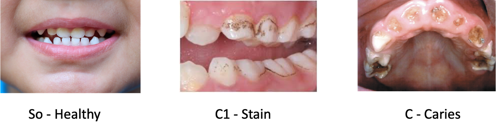
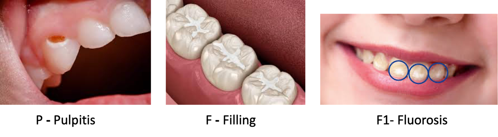
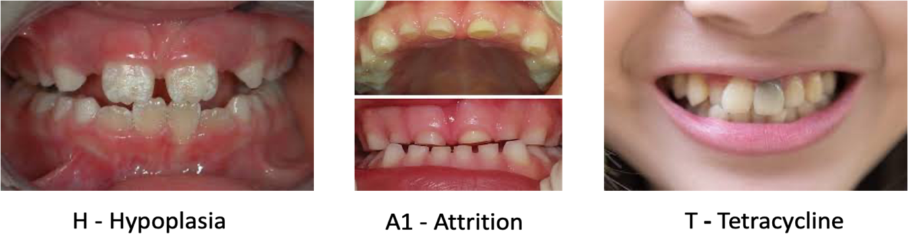
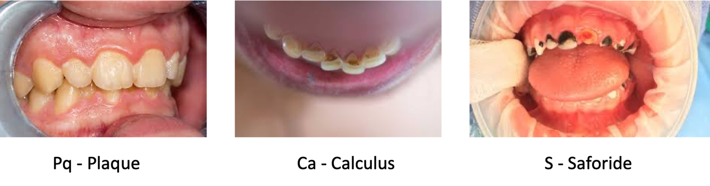

The dental conditions were labeled in detail, including categories like healthy enamel, staining, superficial cavities, deep caries, pulpitis, fillings, fluorosis, hypoplasia, and other specific dental issues.
This methodical approach helped maintain precision throughout the labeling process.
The 16 categories chosen for the label are described below.
So - Healthy
The tooth enamel is intact, with a white, glossy surface. The borders are marked by fully enclosing the tooth ridge.
C1 – Stain
The enamel of the teeth is intact, but in certain areas, its color has changed from yellowish white to dark brown or black.
These stains are primarily found in the grooves of the teeth and on the labial and lingual collar surfaces.
The affected areas are marked by encircling the regions where color changes are detected.

Figure 6
C2 - Superficial Perforation (Superficialis)
Tooth enamel has discolored (ranging from white to black) and developed a rough surface.
Cavities have formed at the enamel level, with superficial cavities potentially occurring on any tooth surface.
C3 - Caries Media
In cases of acute caries progression, the enamel appears white and dead, even without forming a cavity.
When a cavity is present, it is surrounded by yellow-white dead enamel and filled with pale yellow softened cusps.
Chronically progressing caries in this stage are characterized by a dark brown hard crust.
C4 - Deep Caries
The cavity in this stage is filled with dark, softened crimson material.
The carious cavity is large, covering several tooth surfaces and deepening significantly.
P – Pulpitis
Pulpitis involves a large perforation cavity, with inflammation detected in the surrounding soft tissues.
Multiple tooth surfaces may be affected by the carious cavity.
F – Filling
Cement fillings in children are usually vibrant and colorful, standing out against the natural tooth.
Light-cured fillings are subtler, with borders close to the tooth's natural color.
E – Extracted
The diagnosis of extraction is based on the child’s age, the condition of the adjacent teeth, and the corresponding markings on the medical card.
F1 – Fluorosis
Fluorosis is identified by pale yellow and dark spots, with shallow grooves forming on the tooth's surface (Figure 7).

Figure 7
H – Hypoplasia
Hypoplasia manifests as linear and punctate defects on the tooth root surfaces that erupt simultaneously.
These defects are also seen at the center of the molar’s chewing surface.
A1 – Attrition
In this stage, the anatomical structure of the tooth’s chewing surface is lost, appearing flattened with a glossy yellow hue.
T - Tetracycline Staining
Tetracycline-induced staining changes the enamel’s color from pale yellow to thick yellow, with the drug’s effect depending on the dosage used (Figure 8).

Figure 8
R – Root
A portion of the tooth is missing.
Pq – Plaque
Plaque can form on any tooth surface, presenting a fluffy, rough texture. The black plaque is usually located in the collar area of the tooth ridge.
Ca - Calculus (Stone)
Calculus, or dental stone, forms as a hard, light yellow, or dark brown substance, typically in the collar area of the tooth.
S - Saforide
Saforide, a black substance that stops caries in primary teeth, forms a hard cavity (Figure 9).

Figure 9